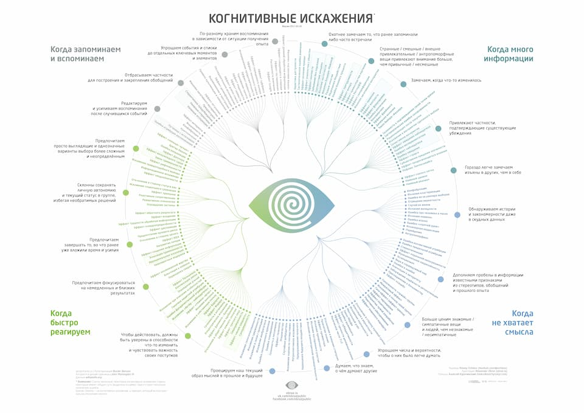

под когнити́вными искаже́ниями понимаются систематические ошибки в мышлении или шаблонные отклонения, которые возникают на основе дисфункциональных убеждений, внедрённых в когнитивные схемы (образ знакомого пространственного окружения). Когнитивные искажения являются примером эволюционно сложившегося поведения. Некоторые из них выполняют адаптивную функцию, поскольку они способствуют более эффективным действиям или более быстрому принятию решений. Другие, по-видимому, происходят из отсутствия соответствующих навыков мышления или из-за неуместного применения навыков, бывших адаптивными в других условиях.
Склонность считать «более вероятным» то, что проще вспомнить или снабдить примером из памяти; отклонение в сторону более яркого, необычного или эмоционально заряженного
Склонность восприятия к зависимости от повторяющихся мыслей: если что-то постоянно находится в фокусе внимания, то это влияет на способность к адекватной оценке
Склонность верить в правдивость информации, которую многократно предъявляли ранее
Самоусиливающийся процесс, в ходе которого коллективная вера во что-то становится всё более убедительной за счёт нарастающего публичного повторения
Склонность иметь чрезмерное расположение к объекту лишь из-за знакомства с ним
Восприятие и память зависят от контекста: воспоминания о событиях вне текущего контекста сложнее восстановить, чем о событиях в контексте (например, скорость и точность воспоминаний о работе снижается дома, и наоборот)
Трудности с вспоминанием информации в отсутствие семантических подсказок (ассоциаций), подсказок состояния (эмоционального, физического и умственного) или контекстных подсказок (зависящих от окружения или ситуации)
Эмоционально насыщенная информация лучше вспоминается в соответствующем ей эмоциональном состоянии (справедливо как для радостных, так и для грустных воспоминаний
Иллюзия, при которой слово, имя или объект, недавно попавшие во внимание либо впервые предъявленные, снова предъявляются через промежуток времени, кажущийся невероятно коротким (не путать с «иллюзией новизны» и «систематической ошибкой отбора»)
Склонность недооценивать влияние или силу вегетативной нервной системы на состояние, предпочтения и поведение себя и других людей (включая голод, жажду, сексуальное возбуждение, воздействие веществ, физическую боль и сильные эмоции)
Cклонность оценивать вредоносные действия как более плохие или аморальные, чем равноценно вредоносные бездействия
Склонность игнорировать объективную частоту некоторого события (базовый процент) и фокусироваться на информации, относящейся к частному случаю
Странная, необычная или смешная информация запоминается лучше по сравнению с предсказуемой, типичной и рядовой
Склонность к лучшему запоминанию объекта, выделяющегося среди ряда других однородных объектов
Объяснения в картинках легче запоминаются, чем записанные словами
Склонность по-разному сохранять в памяти информацию в зависимости от того, насколько она затрагивает человека лично (связанная с собой информация легче вспоминается)
Предположение о том, что люди используют для коммуникации слова с позитивной семантикой более часто и разнообразно, чем слова с негативной семантикой
Склонность слегка позитивно оценивать нейтральные ситуации (в условиях недостатка эмоциональных или ценностных характеристик в ситуации, достаточных для быстрой оценки)
Склонность слишком сильно полагаться только на первую часть предъявленной информации («якорь») в принятии решения; в том числе тяготение оценки неизвестного числа к ранее предъявленным числам
Склонность в недостаточной степени пересматривать свои убеждения при возникновении новых обстоятельств
Увеличение или уменьшение воспринимаемого значения из-за сравнения с ранее воспринятым контрастирующим значением (на картине серый кажется рыжеватым или голубоватым из-за соседних красок; цена — более высокой или низкой из-за цены в соседнем магазине)
Склонность воспринимать два варианта как более различные при одновременной оценке, сравнительно с оценкой каждого из них по отдельности
Ошибка в оценке и предсказаниях, возникающая, когда люди уделяют слишком много внимания какому-то одному аспекту явления (например, убеждение, что люди с высоким доходом субъективно более счастливы)
Феномен разной реакции на одинаковый выбор в зависимости от того, как он преподносится: например, как положительный или отрицательный выбор
Склонность воспринимать номинальную стоимость денег, а не их реальную стоимость, выражающуюся в покупательной способности
Интенсивность ощущений логарифмически зависит от интенсивности раздражителя; человеку сложно оценивать относительно малые различия между относительно большими величинами
Склонность искать, интерпретировать или отдавать предпочтение информации, которая согласуется со своей точкой зрения, убеждением или гипотезой
Склонность проверять гипотезу только прямым её тестированием, пренебрегая косвенным тестированием и проверкой альтернативных гипотез
Склонность убеждать себя рациональными аргументами, что покупка стоила своих денег
Склонность ретроспективно приписывать положительные характеристики ранее сделанному выбору
Склонность игнорировать и быстрее забывать стимулы, эмоционально неприятные и противоречащие прошлым убеждениям, а также уделять внимание стимулам, которые согласуются с ожиданиями
Склонность исследователя ожидать определённого результата, предпочитать подтверждающие данные опровергающим, бессознательно манипулировать ходом эксперимента (или неправильно интерпретировать его итоги), чтобы обнаружить ожидаемый результат
Игнорирование очевидно существующей негативной ситуации, отказ сталкиваться с информацией, способной вызвать психологический дискомфорт
Склонность считать информацию правдивой/существенной, если она имеет какую-либо субъективную ценность
Склонность продолжать доверять ранее запомненной ошибочной информации даже в том случае, если её ошибочность была доказана и осознана
Отбрасывание новой информации, если она противоречит существующим социальным нормам, привычкам, устоявшимся представлениям или парадигмам
Склонность распознавать воздействие когнитивных искажений на суждения и действия других, сопровождаемая неспособностью распознавать собственные когнитивные искажения
Склонность к ожиданию у других людей гораздо большего количества эгоцентричных когнитивных искажений, чем есть на самом деле
Склонность верить в объективность собственной картины мира, приписывая несогласным с ней людям недостаток информированности, иррациональность или когнитивные искажения
Склонность ошибочно распознавать неизбежные регулярные «полосы» или «кластеры» в небольшом количестве данных, взятых из случайной выборки
Склонность не учитывать, что вариативность при малых размерах выборки — значительнее, чем при больших
Склонность полностью отрицать вероятностную оценку событий при принятии решений в условиях неопределённости (малые риски либо полностью отрицаются, либо глобально преувеличиваются)
Апелляция к личному опыту или отдельному примеру для обоснования какого-либо обобщающего суждения
Склонность преувеличивать свои способности к интерпретации данных и предсказанию результатов, особенно когда все попытки анализа формируют связные непротиворечивые выводы или историю
Ошибка в формальной логике, при которой замена обозначения на идентичное в верном утверждении может привести к неверному выводу
Вера в то, что вещи и явления, которые вы недавно заметили, на самом деле являются новыми, недавно появившимися (изначально о словах или правилах языка)
Склонность думать, что прошлые события повлияют на будущие вероятности («чем больше раз подряд выбрасываешь решку, тем выше вероятность «орла»)
Склонность считать, что человек, которому повезло в случайном испытании, и в следующих попытках будет более везучим
Склонность находить взаимосвязь между случайными событиями, людьми или обстоятельствами, когда на самом деле её не существует
Разновидность зрительной иллюзии: формирование иллюзорных образов (часто лиц или фигур людей и животных), в качестве основы которых выступают детали реального объекта (облака, неодушевлённые объекты, детали ландшафта)
Склонность переносить человеческий образ, его характеристики и свойства на неодушевлённые предметы, живых существ, явления и силы природы, сверхъестественных существ, абстрактные понятия и так далее
Вера в то, что свойства участника коллектива совпадают с общими коллективными свойствами; вера в то, что решение группы отражает предпочтения всех участников группы (даже если есть свидетельства обратного)
Склонность объяснять внутренними причинами негативное поведение внешних социальных групп и позитивное поведение своей подгруппы, а также внешними причинами — позитивное поведение внешних групп и негативное поведение своей подгруппы
Ожидание определённых свойств от человека из-за его принадлежности к какой-либо группе, при том, что о самом человеке значимых данных нет
Склонность предписывать классам объектов или людей неизменяемые «сущностные» характеристики, чтобы предсказывать сходство между представителями этого класса или их поведение
Использование предмета в каком-то одном качестве препятствует последующему использованию его в ином качестве в этой же текущей ситуации
Человек, которого другие члены группы считают склонным к эгалитаризму (формированию равноправного общества), с большей вероятностью будет впоследствии принимать элитаристские решения (ведущие к неравноправию)
Вера в то, что мир устроен справедливо, и люди в жизни получают то, что заслуживают в соответствии со своими личными качествами и поступками: хорошие люди награждаются, а плохие — наказываются
Ошибка в утверждении, что если некий аргумент содержит логическое заблуждение, то выводы из него автоматически являются ложными
Склонность полагаться на мнение авторитета или подчиняться авторитету, независимо от содержания его мнения (см. также эксперименты Стэнли Милгрэма)
Склонность к самоуспокоению или чрезмерной зависимости от средств автоматизации (производственных линий, роботов, автоматизированных систем принятия решений и так далее)
Cклонность делать что-то или верить во что-то лишь потому, что многие люди так делают или верят
Эффект, при котором приём физиологически инертных веществ или прохождение нейтральных процедур без лечебных свойств (собственно «плацебо») вызывает психологический и, как следствие, физиологический ответ у пациента
Склонность оценивать представителей своей социальной группы как относительно более разнообразных, чем представителей других групп («они одинаковые, мы все разные»)
Склонность к более лёгкому распознаванию представителей собственной расы и затруднённому распознаванию представителей иных рас (включая черты лица, вариации цвета кожи и глаз, текстуры волос, эмоции)
Склонность отдавать предпочтение тем, кого вы считаете «своими», представителям вашей социальной группы (включая оценку распределение ресурсов и так далее)
Воздействие общего впечатления о чём-либо (явлении, человеке, вещи) на восприятие его частных особенностей поодиночке
Ошибка в оценке привлекательности: в группе люди кажутся более привлекательными, чем поодиночке
Склонность объяснять успехи людей, которые вам нравятся (включая самих себя), их личными качествами, а провалы — неудачными обстоятельствами
Позиция в социальной, корпоративной или организационной культурах, при которой избегается использование или покупка уже существующих разработок, исследований, стандартов или знаний, из-за их внешних происхождения и затрат
Склонность обесценивать предложение или суждение, если оно исходит от противника или неприятного человека
Склонность путешественников по-разному оценивать продожительность маршрута в зависимости от того, насколько он им знаком (часто используемые маршруты кажутся субъективно короче по времени, чем незнакомые)
Набор когнитивных операций, которые люди и домохозяйства используют для кодирования, классификации и оценки своих финансовых трансакций
Склонность считать, что если какое-то событие вероятно, то оно обязательно произойдёт
Отказ готовиться к несчастью, которое не случалось раньше, или реагировать на него; недооценка вероятности происшествия и его последствий
Группа шутливых принципов, утверждающих, что если есть вероятность того, что какая-нибудь неприятность может случиться, то она обязательно произойдёт (аналогично «бутерброду, всегда падающему маслом вниз»)
Интуитивная оценка ситуации как игры с нулевой суммой (когда выигрыш одной стороны в точности равен потерям другой стороны), в то время как ситуация таковой не является и обе стороны могут выигрывать
Разновидность систематической ошибки отбора, когда исследователи концентрируются на вещах или людях, «выживших» или прошедших какой-то процесс, неумышленно упуская из рассмотрения характеристики «погибших» из-за невозможности их прямого наблюдения
Склонность оценивать вероятность наступления хотя бы одного события из группы ниже, чем сумму вероятностей каждого события в отдельности
Склонность скорее потратить деньги в мелких, «размененных» купюрах, чем такую же сумму в крупных
Закономерность, согласно которой кратковременная человеческая память, как правило, не может запомнить и повторить более 7 ± 2 элементов
Склонность переоценивать и свою способность понимать других, и способность других понимать тебя
Хорошо знакомым с проблемой людям очень сложно рассматривать её с точки зрения менее информированных людей («учитель не может подобрать понятные объяснения сложной темы для учеников»)
Склонность к завышению оценки того, насколько действия человека и его внешний вид заметны для окружающих
Исключение из ряда фундаментальных ошибок атрибуции: другие люди видятся как обладатели внешней (например, денежной) мотивации, а себя человек рассматривает как внутренне мотивированного
Склонность объяснять самостоятельно сформированные предпочтения (выбор) влиянием или действиями внешних агентов (сил), которые ведут себя «положительно» (эффективны, проницательны, дружественны)
Склонность оценивать своё понимание других людей выше, чем понимание другими людьми тебя; также склонность оценивать понимание твоей социальной группы других социальных групп выше, чем обратное
Склонность воспринимать события, произошедшие недавно, более отдаленными, а события, которые случились давно — более близкими
Склонность оценивать прошлые события в настоящем более позитивно, чем они оценивались в ходе событий или сразу после их завершения
Склонность задним числом завышать степень собственного понимания или способности к прогнозированию результатов события, которое уже произошло, или факта, который уже был установлен, несмотря на отсутствие достаточной первоначальной информации для их предсказания
Склонность оценивать качество ранее принятого решения по его последствиям, которые стали известными позднее, особенно если последствия оказались «негативными»; из оценки исключаются время, обстоятельство и известная человеку информация на момент принятия решения
Склонность оценивать добродетельность поступка по результатам, к которым этот поступок привёл, даже если совершивший поступок не контролировал полностью само действие или его последствия
Вера в то, что общество или социальные институты «ухудшаются»; предрасположенность рассматривать прошлое состояние общества в более позитивном ключе, а будущее в более негативном
Склонность переоценивать потенциальную длительность или интенсивность переживаний, которые могут быть вызваны определённым событием в будущем
Вера в то, что вероятность наступления негативного события или результата выше по сравнению с другими людьми
Склонность во время планирования будущих действий недооценивать время их совершения, независимо от предыдущего опыта
Склонность неточно оценивать количество времени, которое будет сэкономлено (или затрачено) на преодоление определённой дистанции при увеличении (или снижении) скорости движения, например, автомобиля
Склонность слишком высоко оценивать полезность изобретения или нововведения, не замечать его недостатков, верить в его быстрое внедрение без доработок
Склонность к ошибочной проекции собственного состояния, чувств или предпочтений на будущие состояния или события (см. также «Разрыв эмпатии между горячим и холодным состоянием»)
Склонность переоценивать свою способность к контролю импульсивного поведения
Склонность переоценивать последовательность и непротиворечивость собственных прошлых, настоящих и будущих оценок, суждений, убеждений, эмоций, верований и т.п. (рассматривается в контексте изменения человека во времени)
Субъективная уверенность в собственных суждениях статистически больше, чем объективная точность суждений, особенно когда эта уверенность относительно высока; может выражаться в переоценке собственной результативности, переоценке результативности по сравнению с другими, либо переоценке точности своих знаний
Склонность участников опросов общественного мнения давать ответы на вопросы, более соответствующие социально одобряемым нормам, чем действительности; часто выражается в форме преувеличения ответов, связанных с «хорошим» поведением, и преуменьшения ответов, связанных с «плохим» поведением
Склонность считать, что СМИ, реклама и иные инструменты массовых коммуникаций больше влияют на других людей, чем на себя; недооценка влияния массовых коммуникация на себя самого
Склонность переоценивать степень нормальности / типичности собственных оценок, суждений, предпочтений, ценностей, привычек среди остальных людей; склонность полагать, что все остальные думают точно так же, как сам человек
Склонность переоценивать вероятность достижения успеха в сложных задачах и недооценивать вероятность достижения успеха в лёгких задачах
Люди, имеющие низкий уровень квалификации, делают ошибочные выводы, принимают неудачные решения и при этом не способны осознавать свои ошибки в силу низкого уровня своей квалификации (см. также «Мнимое превосходство»)
Склонность слишком сильно полагаться на собственные суждения и/или оценивать себя выше, чем есть на самом деле; вероятно связана с потребностью удовлетворить своё эго и полезна при формировании воспоминаний
Вера в то, что вероятность наступления негативного события или результата ниже по сравнению с другими людьми (обычно оптимизм рассматривается именно в контексте не-наступления негативного события: стать жертвой преступления, заработать рак лёгких курильщика или потерять инвестиции)
Люди высоко оценивают точность таких описаний их личности, которые, как им кажется, созданы индивидуально для них. На самом деле эти описания неопределённы и достаточно расплывчаты, так что их можно применить и ко многим другим людям.
Любое искажение когнитивного или перцептивного процесса, вызванное необходимостью поддержать или повысить свою самооценку; часто выражается в склонности объяснять успех собственными усилиями, а неудачи — воздействием внешних обстоятельств
Вера людей в способность каким-либо образом влиять на события, которые объективно от них не зависят или зависят в гораздо меньшей степени, чем те предполагают
Склонность переоценивать собственные качества и способности по сравнению с другими людьми
Склонность объяснять поступки и поведение других людей их личностными особенностями (так называемой «внутренней диспозицией»), а собственное поведение — внешними обстоятельствами (так называемой «внешней диспозицией»)
Склонность меньше винить в происшествии жертву при субъективном наличии сходства с жертвой; чем меньше сходства между человеком и жертвой происшествия, тем больше ответственности тот склонен возлагать на жертву (см. также «Вера в справедливый мир»)
Склонность воспринимать себя как относительно изменчивых в зависимости от ситуации (в личных качествах, поведении,настроении), а других людей как более предсказуемых, неизменных в поведении и качествах в различных ситуациях
Склонность преувеличивать ценность того, в получение или достижение чего были вложены значительные усилия
Склонность подстраивать поведение под осознаваемый уровень опасности: быть осторожнее при высоком уровне опасности и активнее рисковать при меньшем уровне опасности
Чем ближе две выплаты (более ранняя и более поздняя) к настоящему времени, тем субъективно предпочтительнее более ранняя из них
Склонность высоко ценить идею или предложение исключительно по причине их новизны (автоматически считая это лучшим вариантом), либо недооценивать статус кво (автоматически считая его сохранение худшим вариантом)
Склонность предлагать большую помощь, если жертва специфична и идентифицируема, и меньшую, если нужду испытывает большая и слабо определённая группа людей («Смерть одного — трагедия, миллионов — статистика»)
Склонность индивида или группы рационализировать прошлые действия, решения и инвестиции перед лицом непрерывно ухудшающихся результатов вместо того, чтобы изменить или прекратить действия (в том числе, например, продолжать инвестиции); ср. «нести тяжело и бросить жалко»
Информация, которую человек создаёт сам, запоминается лучше,чем прочитанная или узнанная информация от других людей
Склонность предпочитать избегание потерь равнозначным шансам на выгоду: лучше не потерять 100 рублей, чем найти 100 рублей
Склонность переоценивать значимость товаров, которые покупатель создаёт отчасти самостоятельно (например, собирает из деталей)
Склонность избегать незаконченности, завершать работу или другой процесс (широко исследовалась в отношении к употреблению пищи и контролю размера порций)
Склонность сильнее желать исключения одного риска, чем резкого уменьшения другого, более значительного риска; теракт и авиакатастрофы пугают сильнее, хотя в автокатастрофах людей гибнет намного больше
Склонность инвесторов продавать ценные бумаги, стоимость которых выросла, и сохранять позиции в ценных бумагах, потерявших в стоимости
Склонность ожидать бесспорного результата тогда, когда он совсем не гарантирован (в поведенческой экономике); обычно связан с пропуском одного из шагов в цепочке принимаемых решений
Информация, на прочтение и обдумывание (обрабатывание) которой пришлось затратить больше усилий, запоминается проще
Склонность присваивать ценность собственным вещам только по причине владения ими; склонность индивида требовать за принадлежащий ему объект значительно большую цену, чем он сам был бы готов заплатить, чтобы его приобрести
Ситуация, когда при показаниях против их убеждений люди могут отбросить эти показания и стать более уверенными в своих существующих убеждениях
Склонность сохранять существующее социальное, политическое и экономическое устройство, отрицать перемены, даже если ради этого приходится жертвовать чьими-то личными и коллективными интересами
Феномен, при котором воспитание, пропаганда или склонение к определённому действию вызывает реакцию, прямо противоположную предполагаемой (оппозиция или противодействие)
Мотивационное состояние, возникающее в ситуации, когда какое-либо внешнее условие (другой человек, предложение, или правило) ограничивает свободу или создает угрозу ограничения проявлений индивида
Введение «подсадной утки», варианта #3, влияет на выбор между двумя; если #3 во всем хуже #1, но частью лучше, а частью хуже, чем #2, то #1 становится популярнее (даже если часть свойств #2 лучше, чем у #1)
Склонность ощущать неприязнь или чувство соперничества к кому-либо, превосходящему физически или интеллектуально
Склонность желать, чтобы вещи оставались приблизительно теми же самыми, сохраняли статус кво; склонность воспринимать отклонение от статуса кво как потери
Склонность выбирать решение, для которого вероятность благоприятного исхода известна, по сравнению с решением, когда вероятность благоприятного исхода не известна («лучше понятный риск, чем неопределенность»)
Искажённое восприятие ценности информации; вера в то, что большее количество информации может улучшить качество принятого решения, даже если дополнительная информация объективно бесполезна
Склонность оценивать аргументы, основываясь на правдоподобности выводов из них, а не собственно доказательной силе; если человек согласен с итоговым выводом, он склонен доверять тому, что процесс обоснования выводов также верен (ср. с «Предвзятость подтверждения»)
Склонность оценивать высказывание или афоризм как более точные или правдивые, если оно содержит рифму (например, «What sobriety conceals, alcohol reveals» оценено как более истинное, чем «What sobriety conceals, alcohol unmasks»)
Склонность придавать чрезмерное значение и тратить лишнее время на обсуждение тривиальных вопросов; при строительстве электростанции — трата времени на обсуждение материалов для строительства велосипедного сарая вместо конструкции самой электростанции
Склонность ставить более точные персональные цели в относительно неважных областях жизни
Предположение о том, что совокупность двух специфических обстоятельств более вероятна, чем одно более общее из них (например, «Вася гот и всегда носит чёрное» более вероятно, чем просто «Вася гот»)
Общий методологический принцип, утверждающий, что если существует несколько логически непротиворечивых объяснений какого-либо явления, объясняющих его одинаково хорошо, то следует, при прочих равных условиях, считать верным самое простое из них
Склонность в отсутствие прямого сравнения двух вещей отдавать предпочтение вещи с меньшей ценностью (например, выбирать дорогой шарф за 45 $, а не дешёвое пальто за 55 $)
Эффект, когда отдалённому воспоминанию приписывается другое происхождение (например, сцена, увиденная в фильме, кажется эпизодом из реального прошлого)
Нарушения и расстройства памяти, выражающиеся в ложных воспоминаниях; может происходить смешение прошлого и настоящего, а также реальных и вымышленных событий (см. подробнее вики-статьи «Псевдореминисценция», «Конфабуляция», «Криптомнезия», «Фантазм»
Род парамнезии, когда человек не может вспомнить, когда было то или иное событие, во сне или наяву, написал ли он стихотворение или просто запомнил когда-то прочитанное, был ли он на концерте известного музыканта или только слышал разговор об этом
Способность воспринимать психическое воздействие со стороны другого лица или группы лиц, степень восприимчивости к воздействию; в частности форма «Ошибки атрибуции воспоминания», когда идеи, предложенные интервьюером, впоследствии принимаются за воспоминания
Информация лучше выучивается и запоминается, если повторять ее несколько раз в течение долгого времени, а не короткого
Неосознанное приписывание определённых качеств члену определённой социальной группы
Искажение памяти в направлении стереотипных представлений (например, гендерных или расовых: имена, похожие на имена чернокожих, запоминаются как имена преступников)
Суждения, мнения, убеждения, не основанные на фактах и опыте, а усвоенные непосредственно из недостоверных источников и воспринимаемые самим субъектом как безусловная истина, не требующая подтверждения
Вещи негативной природы (плохие мысли, эмоции, травмирующие события) сильнее воздействуют на психологическое состояние и запоминаются в текущем моменте, чем нейтральные или позитивные
Склонность быстрее забывать то, что связано с неприятными эмоциями, чем то, что связано с приятными
Оценивая событие или переживание, люди больше всего обращают внимание на пиковый момент и на концовку, а не на сумму состояний на протяжении всего события
Две функции, срабатывающие при запоминании: «заострение» — склонность вспоминать маленькие детали при пересказывании своего опыта или чужой истории, «выравнивание» — выкидывание частей истории, чтобы упростить заполнение пробелов
Более поздняя информация о событии искажает (портит) более раннюю
Люди и некоторые другие животные запоминают и воспроизводят последовательности сигналов (символов); в частности способности к последовательному вспоминанию снижаются с ростом длины вспоминаемой последовательности
Склонность игнорировать длительность эпизода когда определяешь, насколько он значим (пиковые значения важнее, см. «Правило пика и завершения»)
Устная, письменная, визуальная формы подачи сообщений обеспечивают разное качество запоминания
Способность человека не запоминать нерелевантную информацию
Предоставление части списка, который требуется запомнить, в качестве «подсказки», может ухудшать запоминание остальной части списка по сравнению с запоминанием без подсказок
Вспоминая в произвольном порядке набор сущностей, сначала вспоминают то, что упоминалось в конце списка (эффект свежести); то, что было в начале вспоминают лучше, чем то, что в середине (эффект первенства); середину вспоминают хуже всего
Ухудшение запоминания последнего пункта в списке (см. «Эффект свежести»), если за ним следуют дополнительные пункты, которые не требуется запоминать («суффикс», например, цифры добавочного номера у телефона)
Теория, согласно которой разные уровни глубины ментальной обработки информации по-разному влияют на эффективность запоминания
Нарушение способности к концентрации внимания; различается по характеру и причинам возникновения
Проверяя знание информации, лучше закрепляешь ее в памяти; переписывать для запоминания эффективнее, чем перечитывать
При последовательном произношении и запоминании слов несколькими участниками хуже всего запоминались слова, произнесённые непосредственно предыдущим участником (в силу эффекта Ресторфф лучше всего запоминались самостоятельно произнесённые слова)
Склонность забывать информацию, которую можно легко найти в онлайн-поисковиках (например, Google)
Неспособность вспомнить какое-либо хорошо знакомое слово, при этом в памяти всплывает определенное количество информации о забытом слове